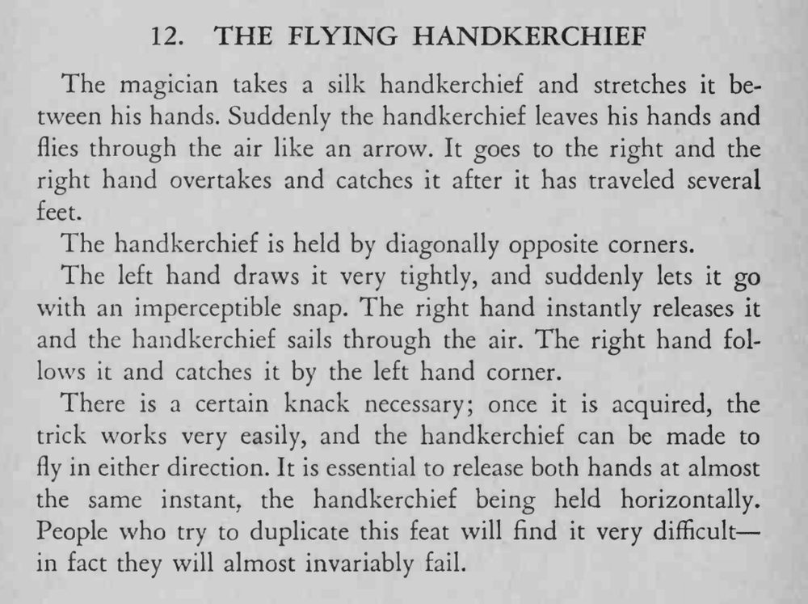

魔术师两手拉紧丝巾，忽然一松，丝巾像箭一样从手中飞出，飞出几英尺后被右手追上接住。
关键是两手几乎同时松开，丝巾必须保持水平，差一点就飞不起来。

The magician takes a silk handkerchief and stretches it between his hands. Suddenly the handkerchief leaves his hands and flies through the air like an arrow. It goes to the right and the right hand overtakes and catches it after it has traveled several feet. The handkerchief is held by diagonally opposite corners. The left hand draws it very tightly, and suddenly lets it go with an imperceptible snap. The right hand instantly releases it and the handkerchief sails through the air. The right hand follows it and catches it by the left hand corner. There is a certain knack necessary; once it is acquired, the trick works very easily, and the handkerchief can be made to fly in either direction. It is essential to release both hands at almost the same instant, the handkerchief being held horizontally. People who try to duplicate this feat will find it very difficult in fact they will almost invariably fail.